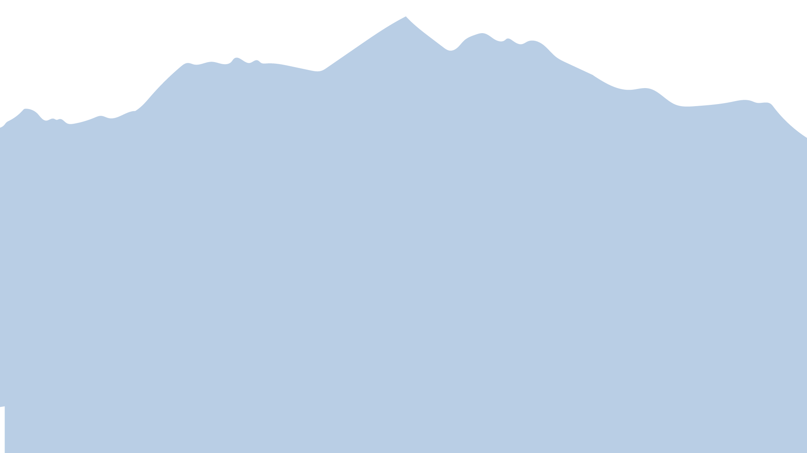
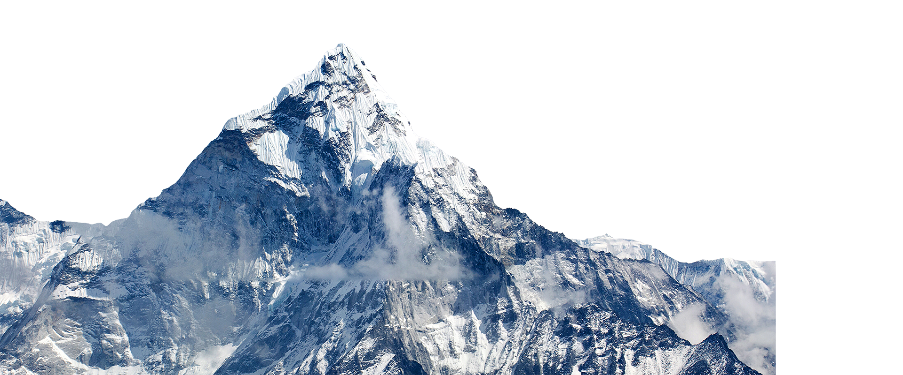
“Everest has always been a magnet for kooks, publicity seekers, hopeless romantics and others with a shaky hold on reality.”
― Jon Krakauer, Into Thin Air
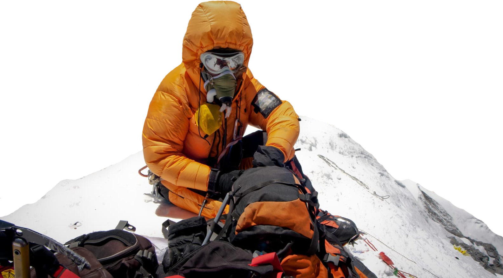
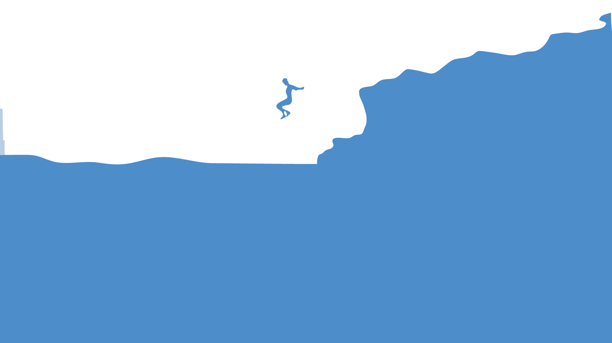
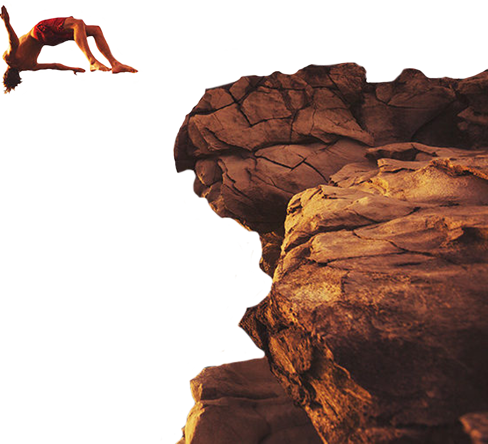
"Living at risk is jumping off the cliff and building your wings on the way down." - Ray Bradbury
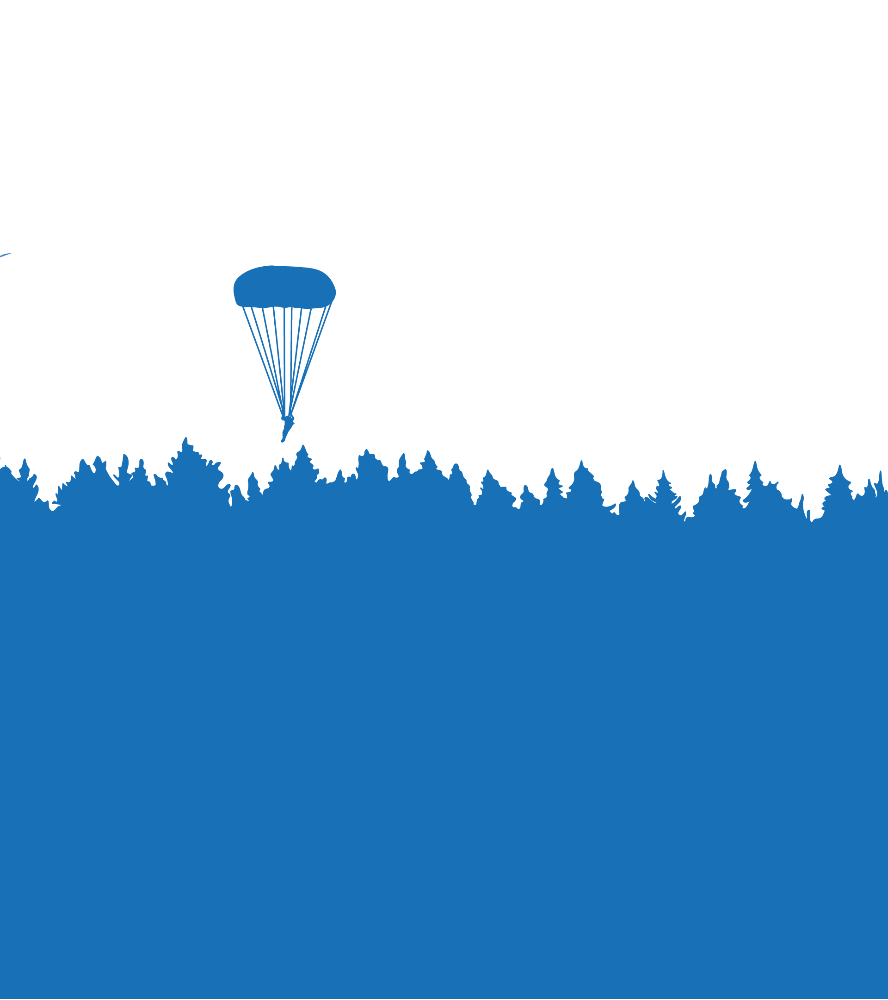
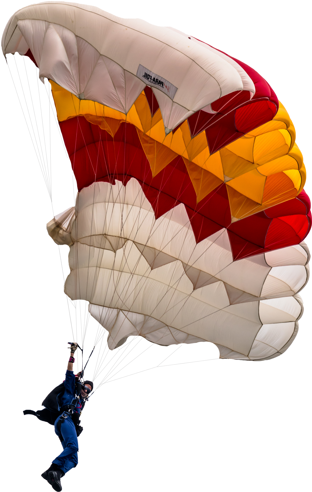
"Skydiving changed my mindset. I went home and told our children they could do anything and do it well." - Bonnie Ross-Parker
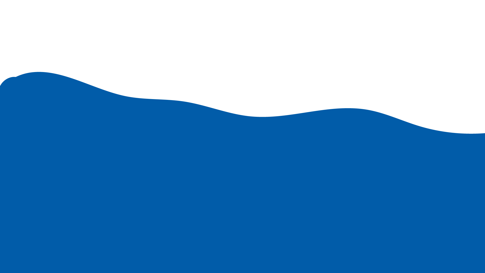
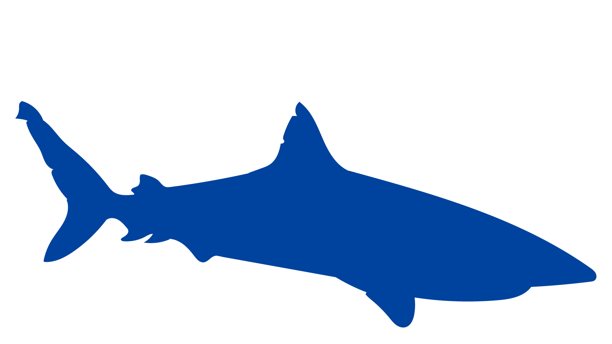
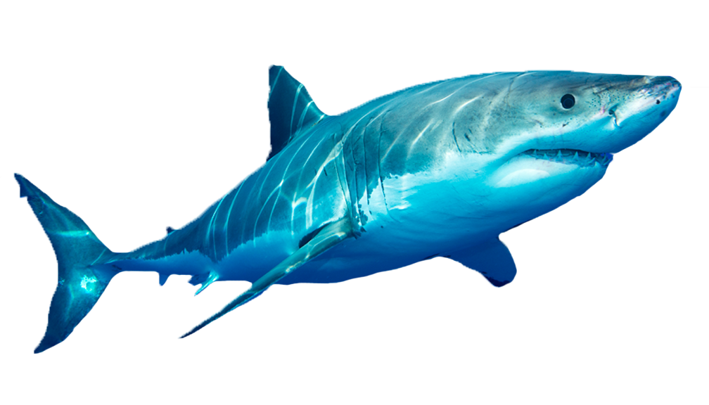
"We were diving with the most feared creature of the ocean and yet for some reason, I was excited. When you see a shark up close and personal, all your fear disappears."
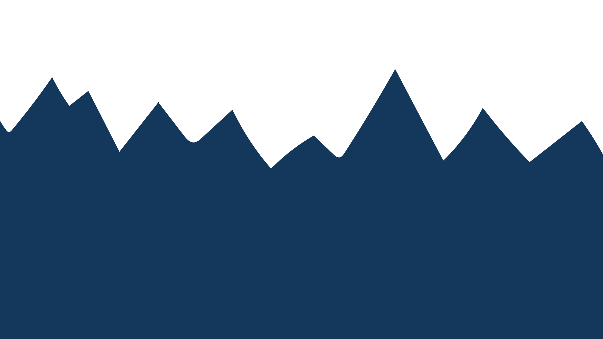
About this Project
"Adrenaline" is a project based around the idea of Adrenaline Junkies, those that have compulsive desire for excitement and adventure.
The design is centered around feelings of excitement and overwhelmingness, amplified by a multiplicity of layers. While all four sections of adrenaline-based activties remain in a chaotic but organized layout, each section is linked to a smaller section that holds more information.
I came up with this idea when thinking about subcultures within my own life, many of them I did not find very exciting. I then began to think about what sparked enjoyment for me and a lot of it came from traveling and being surrounded in nature, leading me to the subculture of "Adrenaline."